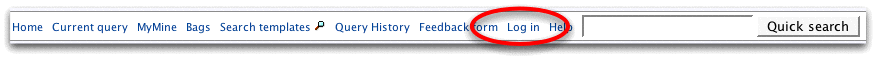

The bags that we have created will be saved temporarily for the current session. To save them permanently in FlyMine you can create a MyMine account.
You only need to provide an email address and a password to generate an account, there is no other information required. Your saved data is always private.
In MyMine you can save bags and queries you create in the QueryBuilder. You can even use the QueryBuilder to turn queries into new templates of your own. You can export/import queries and templates as XML to share them with others.
The ![[Favourite]](star_active.gif) icon lets you set templates as favourites so it easy to access the ones you use often.
icon lets you set templates as favourites so it easy to access the ones you use often.
Please contact us if you have any questions or suggestions: support@flymine.org